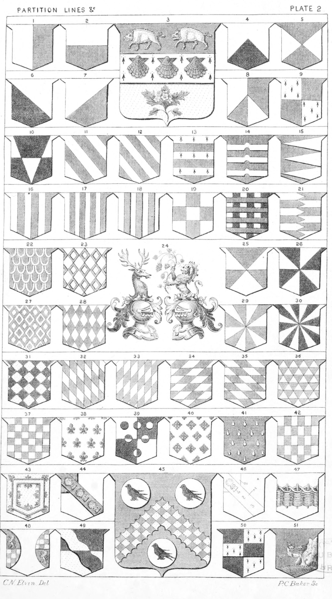

Plate 2.

Plate 2.
Observe in Blazon the word Party may be omitted, e.g., Party per Pale, will be
described as Per-Pale, Party per Fesse, by Per-Fesse, etc.
The Divisions of the Shield are termed Partition Lines.
- Per Pale ar. and az. Collings
- Per Fesse ar. and gu. Meelop
- Per Fesse az. and or, on a Fesse Erm. betw. Two Boars pass, in chief of the second and in base a sprig of Mayflowers slipped and leaved ppr. Three Escallop shells gu. Tupper
- Per Chevron ar. and sa. Aston
- Per Saltire gu. and ar. Shelbury
- Per Bend ar. and sa. Corket
- Per Bend Sinister ar. & gu. Bayley
- Per Pale and Per Chevron ar. and az. Branson
- Per Cross, or Quarterly Erm. & gu. Stanhope
- Per Pile and Fesse, or Per Bar and Pile ar. and sa. Crovile
- 1 Bendy of six ar. and gu. Midland
- Bendy of eight ar. and gu. Minshaw
- Barry of six erm. and gu. Hussey
- Gu. three bars Nowy ar. Fainort
- Barry Pily gu. and ar. Hoyland
- Paly of six ar and az. Mails
- Paly of eight ar. and gu. Lloyd
- Ar. three Pales, or three Palets az. Thornton
- Retierce, or Paly and Fesse of nine ar. and gu.
- Paly of six ar. and sa. four bars gu. De Barry
- Barry of six per pale indented ar. and gu. Peto
- Gules Papelonne ar. or Counter Escallopee. Armourer
- Ar. Masculy conjoined gu. Alan
- Crests, Helmets and Lambrequins
- Gyronny of six ar. and az. Branson
- Gyronny of eight or and sa. Campbell
- Masculy ar. and gu. Pogeys
- Fusily ar. and gu. Duebeck
- Gyronny of twelve ar. and az. Bassingborne, Elers
- Gyronny of sixteen ar. and sa. Stapleford. For other examples of the gyron, see p. 19, f. 41, to 45
- Lozengy or and sa. Bland
- Paly Bendy, or Paly Lozengy, ar. and gu. Sydenham
- Bendy Sinister Paly, or Paly Bendy Sinister
- Barry bendy-sinister ar. and gu. Wenham
- Barry bendy, or Barry lozengy ar. and gu. Ipre. Crispin
- Barry of six indented ar. and az. Gill
- Cheque, or Cheeky, ar. and gu. Alvers
- Ar. Semee of Fleur-de-lis az. or ar. Semee-de-lis az. Potyn. Mortimer
- Quarterly ar. and sa. six Roundles, three, two, and one counterchanged. Howison
- Ar. Crucily sa. Patmore
- Az. Gutte or Gutty d'eau. Winterbotham
- Barry Paly, or Billettee counter billettee ar. and az.
- Or a Double Tressure flory counter flory gu.
- Ar. a canton gu. over all on a bend az. three garbs or, Fitton
- Az. a Chevron lozengy engrailed or and gu. betw. three Plates each charged with a Martlet sa. Fletwood
- Same Arms as No. 44. In Trick
- Ar. a Fesse Weir ppr., or A Weir in Fesse. Williams
- Flanched see in Dictionary
- Per Fesse sa. and or a bend wavy counterchanged. Welnborn
- Per Pale sa. and erm. a fesse counter-changed. Fitz Richard
- Gu. on a mount vert., a Cave ppr. therefrom issuant a wolf at full speed reguardant ar. Williams